Materi Pertemuan 2 — Memahami Data#
Daftar Isi#
Klik untuk membuka Daftar Isi
Referensi: Mulaab - Memahami Data
Macam-macam Data#
Data Terstruktur - data dalam bentuk tabel (kolom & baris), mudah disimpan di database/Excel/SQL
Data Tidak Terstruktur - data yang bervariasi kontennya (email, teks bebas)
Bahasa Alami - bahasa manusia (Indonesia, Inggris, dll)
Data Machine-Generated - data otomatis dari mesin (weblog, IoT)
Data Graph - data keterhubungan antar objek (media sosial)
Data Audio/Video/Citra - data multimedia
Data Streaming - data real-time dari ribuan sumber
Tipe Data Atribut#
Tipe |
Keterangan |
Contoh |
|---|---|---|
Nominal |
Kategori tanpa urutan |
Warna rambut, pekerjaan |
Biner |
Hanya 2 nilai (0/1) |
Merokok (ya/tidak) |
Ordinal |
Ada urutan, tapi jarak tidak diketahui |
Kecil/Sedang/Besar |
Numerik |
Kuantitatif, terukur |
Suhu, berat badan |
Implementasi#
Implementasi lengkap tersedia di notebook Penambangan_Data_A_Pertemuan_2.ipynb Klik Link Disini (https://colab.research.google.com/drive/1E3Q08hfZdSmWzxCUESfMqbEiIOpIxSuUusp=sharing) yang mencakup:
Distribusi Data (distribusi normal, histogram, density plot)
Statistik Deskriptif (mean, median, modus, IQR, variansi, skewness, boxplot)
Jarak Numerik (Minkowski, Manhattan, Euclidean, Cosine, Pearson, dll)
Jarak Binary (symmetric/asymmetric dissimilarity, Jaccard)
Jarak Categorical (Overlay Metric, VDM, MRM)
Jarak Ordinal (normalisasi ranking)
Jarak Campuran (gabungan semua tipe)
atau bisa juga dilihat dibawah ini:
Import library visualisasi#
%matplotlib inline
import pandas as pd
import matplotlib.pyplot as plt
import seaborn as sns
# optional: mempercantik tampilan default
sns.set(style="whitegrid")
KODE PROGRAM IMPLEMNETASI DATA IRIS.CSV DARI KAGGLE#
import pandas as pd
from scipy import stats
# baca file
df = pd.read_csv("IRIS.csv") # atau "/content/IRIS.csv"
print("Shape dataset:", df.shape)
# df.info()
# df.describe()
# df.isnull().sum()
# df.duplicated().sum()
# pilih kolom numerik yang mau dianalisis
kolom = 'sepal_length'
print("jumlah data ", df[kolom].count())
print("rata-rata ", df[kolom].mean())
print("nilai minimal ", df[kolom].min())
print("Q1 ", df[kolom].quantile(0.25))
print("Q2 (median) ", df[kolom].quantile(0.5))
print("Q3 ", df[kolom].quantile(0.75))
print("Nilai Max ", df[kolom].max())
print("kemencengan ", "{0:.2f}".format(round(df[kolom].skew(), 2)))
# Modus (lebih aman pakai pandas)
modus = df[kolom].mode()
if len(modus) > 0:
nilai_modus = modus.iloc[0]
jumlah_modus = (df[kolom] == nilai_modus).sum()
print("Nilai modus {} dengan jumlah {}".format(nilai_modus, jumlah_modus))
else:
print("Tidak ada modus")
print("kemencengan ", "{0:.6f}".format(round(df[kolom].skew(), 6)))
print("Standar Deviasi ", "{0:.2f}".format(round(df[kolom].std(), 2)))
print("Variansi ", "{0:.2f}".format(round(df[kolom].var(), 2)))
Output:
Shape dataset: (150, 5)
jumlah data 150
rata-rata 5.843333333333334
nilai minimal 4.3
Q1 5.1
Q2 (median) 5.8
Q3 6.4
Nilai Max 7.9
kemencengan 0.31
Nilai modus 5.0 dengan jumlah 10
kemencengan 0.314911
Standar Deviasi 0.83
Variansi 0.69
Bar chart jumlah data per species#
Interpretasi singkat
Setiap species memiliki jumlah data yang seimbang (masing-masing 50).
Dataset termasuk balanced dataset, sehingga tidak ada ketimpangan kelas.
plt.figure(figsize=(8,5))
df['species'].value_counts().plot(kind='bar')
plt.title("Jumlah Data per Species")
plt.xlabel("Species")
plt.ylabel("Jumlah")
plt.xticks(rotation=0)
plt.show()
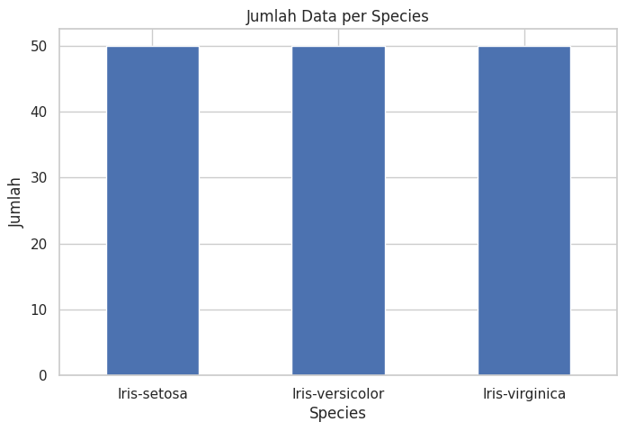
Histogram semua fitur numerik#
Interpretasi singkat
Histogram menunjukkan pola distribusi masing-masing fitur.
Fitur petal cenderung memperlihatkan pemisahan kelompok yang lebih jelas dibanding sepal.
df.hist(figsize=(10,8), bins=15)
plt.suptitle("Histogram Fitur Numerik Iris", y=1.02)
plt.tight_layout()
plt.show()
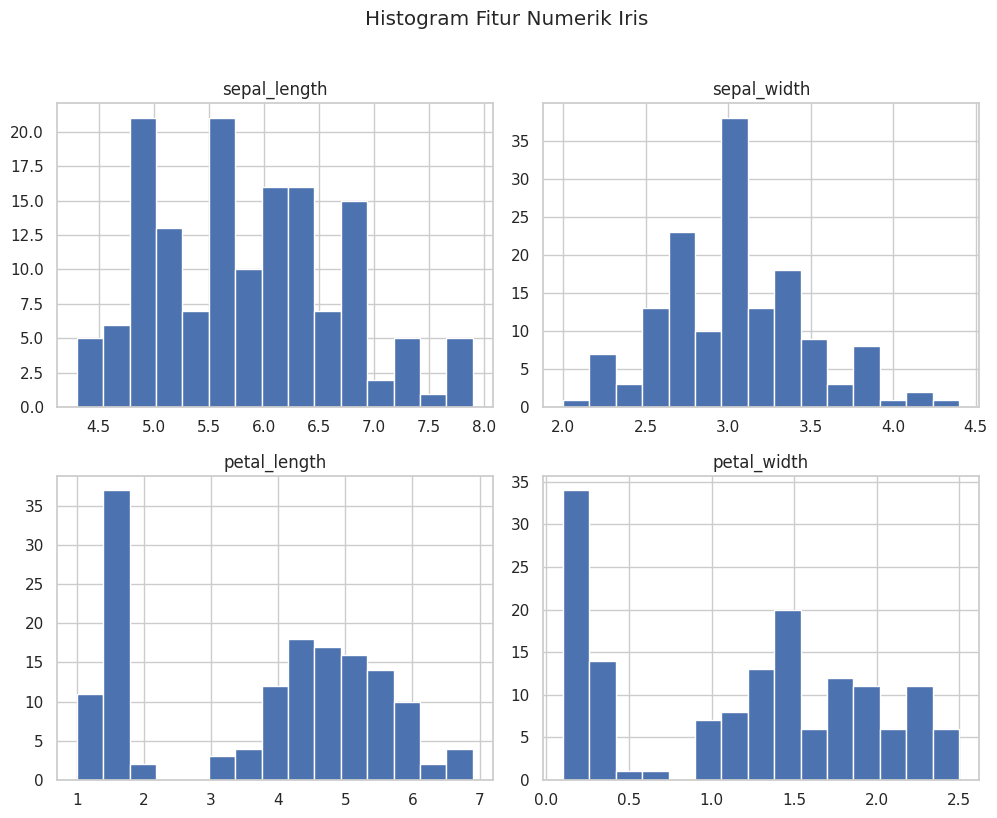
Boxplot semua fitur numerik (deteksi outlier)#
Interpretasi singkat
Boxplot membantu melihat median, kuartil, dan potensi outlier.
Pada Iris, outlier ekstrem biasanya tidak dominan.
ax = df[['sepal_length', 'sepal_width', 'petal_length', 'petal_width']].plot(
kind='box', figsize=(10,6)
)
ax.set_title("Boxplot Fitur Numerik Iris")
ax.set_ylabel("Nilai")
ax.grid(True)
plt.show()
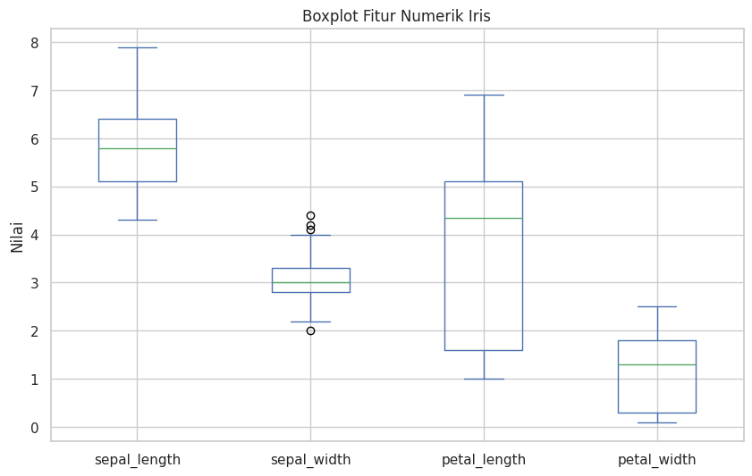
Scatter plot petal_length vs petal_width#
Interpretasi singkat
Iris-setosa biasanya terpisah jelas dari dua species lain.
petal_length dan petal_width merupakan fitur yang sangat informatif untuk klasifikasi.
plt.figure(figsize=(8,6))
sns.scatterplot(data=df, x="petal_length", y="petal_width", hue="species", s=70)
plt.title("Scatter Plot: Petal Length vs Petal Width")
plt.xlabel("Petal Length")
plt.ylabel("Petal Width")
plt.legend(title="Species")
plt.show()
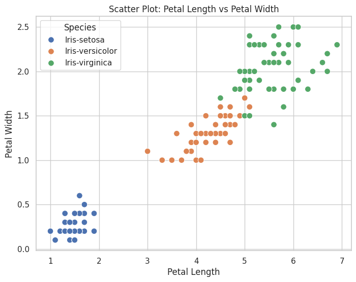
Scatter plot sepal_length vs sepal_width#
Interpretasi singkat
Titik antar kelas lebih banyak overlap dibanding fitur petal.
Artinya fitur sepal cenderung kurang kuat untuk pemisahan kelas.
plt.figure(figsize=(8,6))
sns.scatterplot(data=df, x="sepal_length", y="sepal_width", hue="species", s=70)
plt.title("Scatter Plot: Sepal Length vs Sepal Width")
plt.xlabel("Sepal Length")
plt.ylabel("Sepal Width")
plt.legend(title="Species")
plt.show()
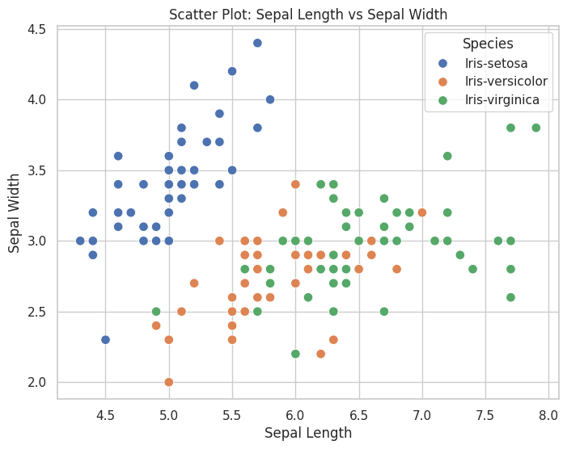
Distribusi satu fitur (histogram + KDE) per species#
Distribusi Petal Length#
plt.figure(figsize=(9,6))
sns.histplot(data=df, x='petal_length', hue='species', kde=True, bins=15, element='step')
plt.title("Distribusi Petal Length per Species")
plt.xlabel("Petal Length")
plt.ylabel("Frekuensi")
plt.show()
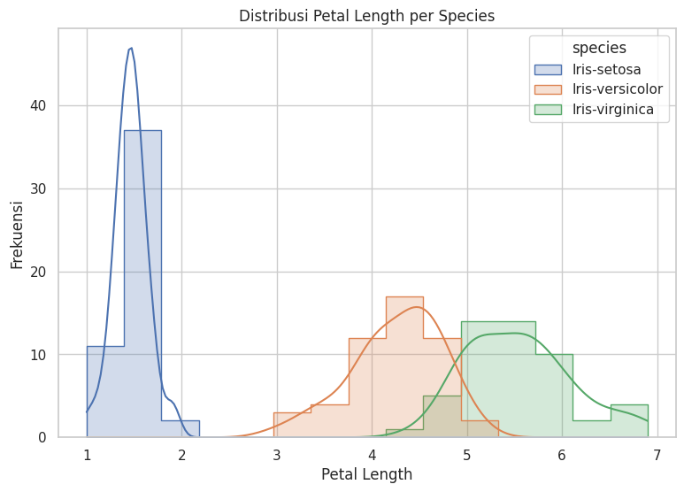
Distribusi Petal Width#
plt.figure(figsize=(9,6))
sns.histplot(data=df, x='petal_width', hue='species', kde=True, bins=15, element='step')
plt.title("Distribusi Petal Width per Species")
plt.xlabel("Petal Width")
plt.ylabel("Frekuensi")
plt.show()
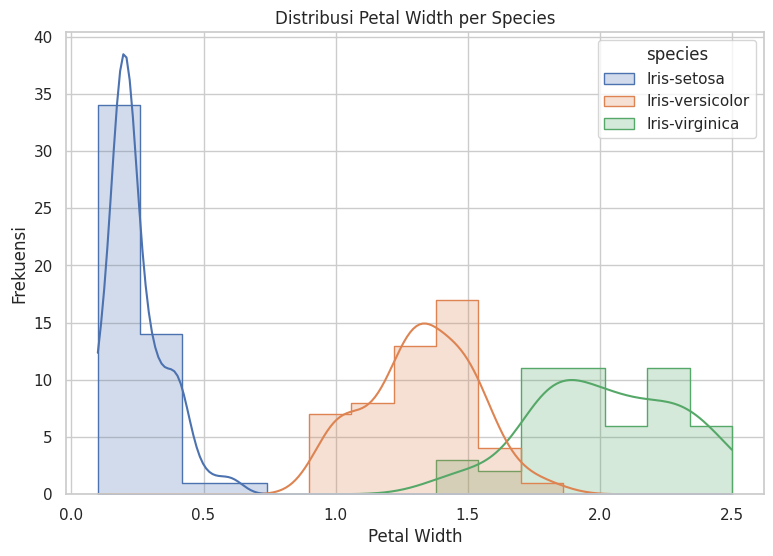
Distribusi Sepal Length#
plt.figure(figsize=(9,6))
sns.histplot(data=df, x='sepal_length', hue='species', kde=True, bins=15, element='step')
plt.title("Distribusi Sepal Length per Species")
plt.xlabel("Sepal Length")
plt.ylabel("Frekuensi")
plt.show()
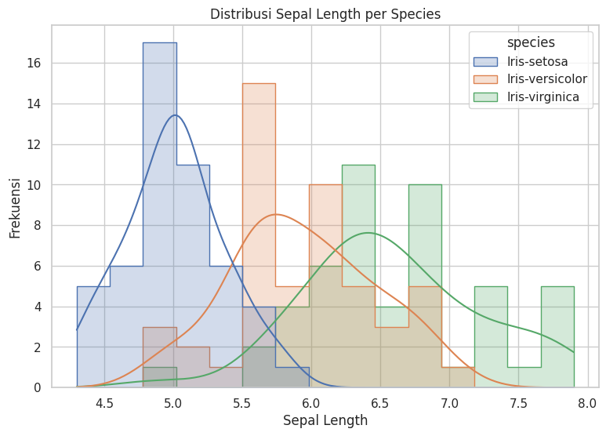
Distribusi Sepal Width#
plt.figure(figsize=(9,6))
sns.histplot(data=df, x='sepal_width', hue='species', kde=True, bins=15, element='step')
plt.title("Distribusi Sepal Width per Species")
plt.xlabel("Sepal Width")
plt.ylabel("Frekuensi")
plt.show()
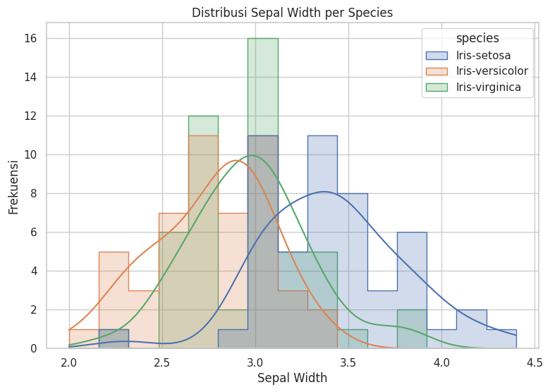
Boxplot per species#
Petal Length per species#
plt.figure(figsize=(8,6))
sns.boxplot(data=df, x='species', y='petal_length')
plt.title("Boxplot Petal Length per Species")
plt.xlabel("Species")
plt.ylabel("Petal Length")
plt.xticks(rotation=0)
plt.show()
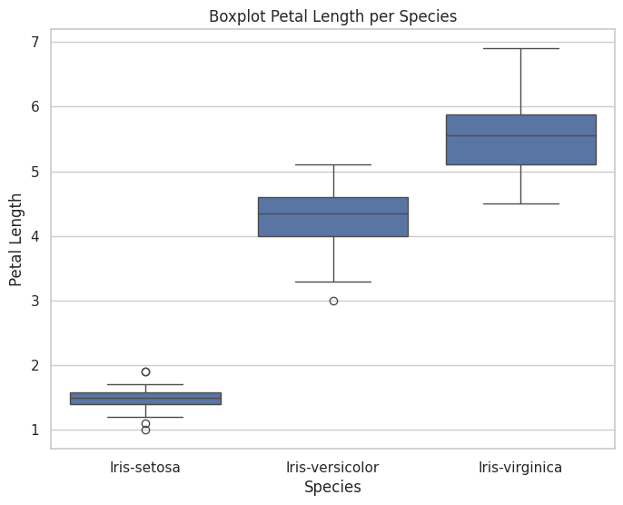
Petal Width per species#
plt.figure(figsize=(8,6))
sns.boxplot(data=df, x='species', y='petal_width')
plt.title("Boxplot Petal Width per Species")
plt.xlabel("Species")
plt.ylabel("Petal Width")
plt.xticks(rotation=0)
plt.show()
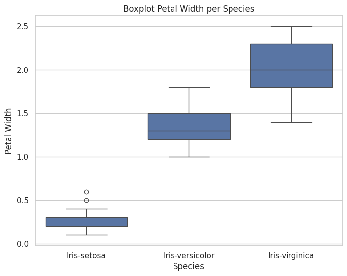
Pairplot#
sns.pairplot(df, hue='species')
plt.show()
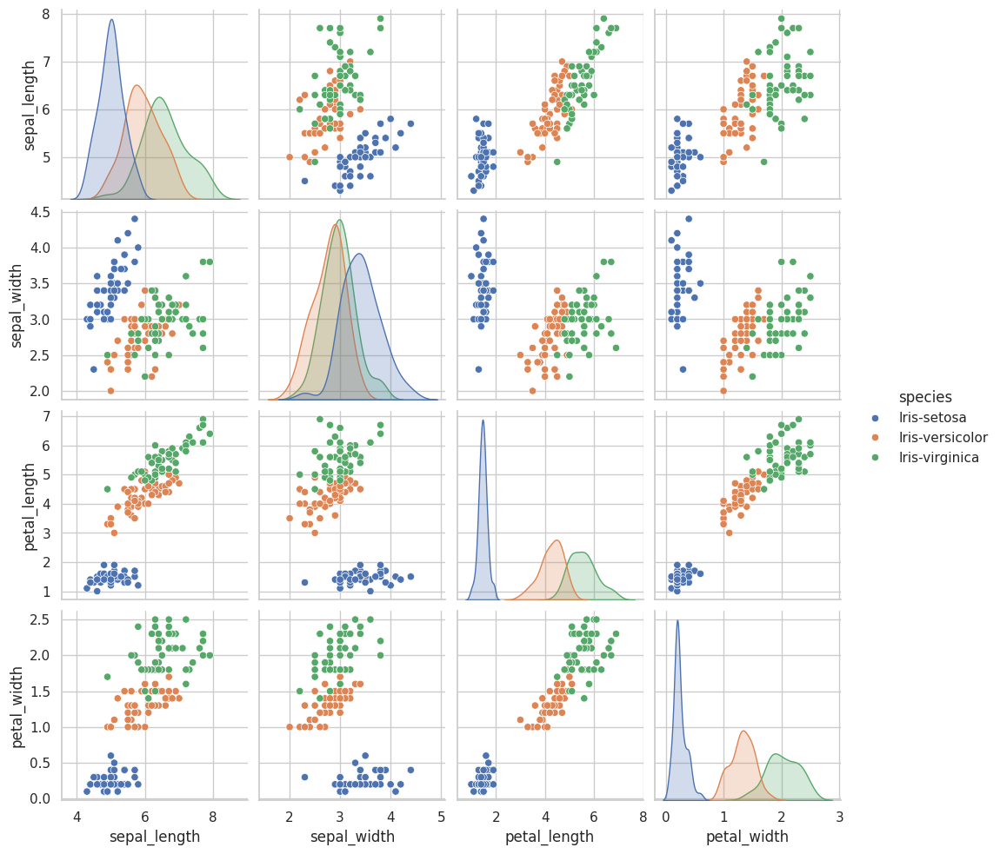
Implementasi Menggunakan Orange Data Mining#
Selain menggunakan Python, eksplorasi data Iris juga dapat dilakukan dengan Orange Data Mining (visual programming, tanpa coding penuh).
Lampiran File & Screenshot#
Download dataset Iris (CSV): IRIS.csv
Download workflow Orange: OrangeIrisFlower.ows
Screenshot workflow Orange:
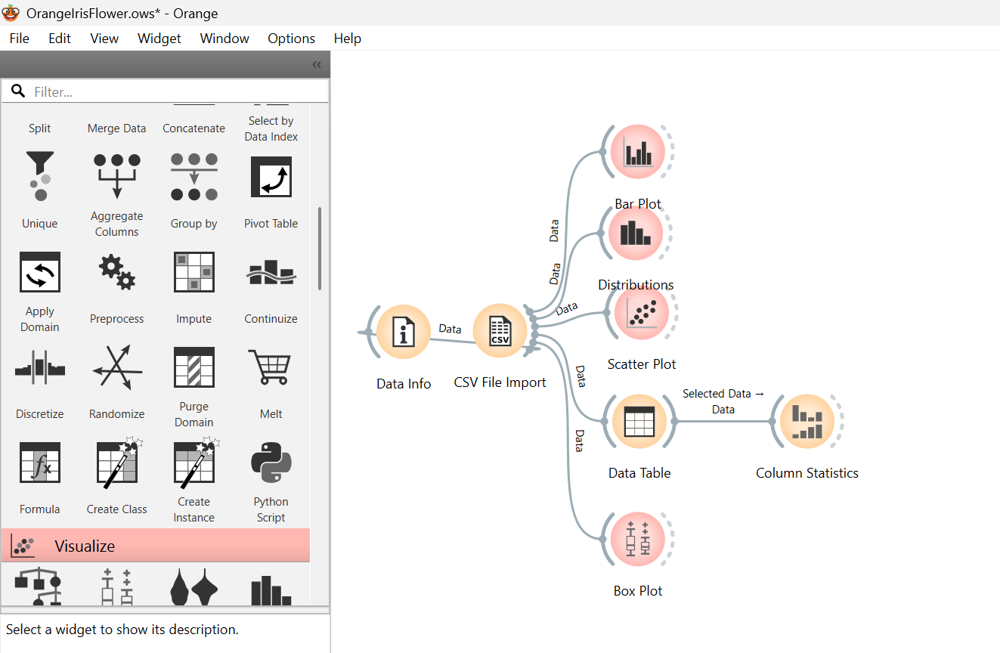
Struktur Workflow Orange (sesuai file .ows)#
Urutan koneksi widget pada workflow:
CSV File Import → Data Info
Memuat
IRIS.csvlalu menampilkan ringkasan dataset.Informasi utama: 150 baris, 5 kolom (4 fitur numerik + 1 kelas/species).
CSV File Import → Data Table
Menampilkan data mentah dalam bentuk tabel.
Memudahkan pengecekan nilai per baris/kolom.
Data Table (Selected Data) → Column Statistics
Mengirim data terpilih ke statistik kolom.
Berguna untuk melihat mean, median, variasi, dan missing values pada subset data.
CSV File Import → Scatter Plot
Visualisasi hubungan dua atribut numerik.
Umumnya dipakai
petal_lengthvspetal_widthuntuk melihat pemisahan kelas Iris.
CSV File Import → Distributions
Menampilkan distribusi nilai setiap atribut (histogram/density).
Membantu membandingkan pola sebaran antar species.
CSV File Import → Bar Plot
Menampilkan jumlah data per kategori (species).
Pada Iris terlihat komposisi kelas seimbang (masing-masing 50).
CSV File Import → Box Plot
Menampilkan median, kuartil, whisker, dan potensi outlier.
Membantu analisis sebaran fitur antar species secara ringkas.
Penjelasan Hasil Implementasi di Orange#
Scatter Plot menunjukkan pemisahan kelas paling jelas pada fitur petal, terutama
Iris-setosayang cenderung terpisah dari dua kelas lainnya.Distributions memperlihatkan pola distribusi tiap fitur; fitur petal biasanya lebih diskriminatif dibanding sepal.
Bar Plot menegaskan distribusi kelas seimbang (balanced dataset), sehingga tidak ada bias jumlah kelas pada analisis awal.
Box Plot memudahkan identifikasi rentang nilai dan outlier, sekaligus perbandingan median antar species.
Column Statistics melengkapi visualisasi dengan angka statistik deskriptif untuk validasi interpretasi grafik.
Dengan workflow ini, proses EDA pada Iris dapat dilakukan cepat, terstruktur, dan konsisten dengan analisis Python di bagian sebelumnya.